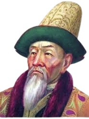

Ключевые личности

Хан Жанибек
Основатель Казахского ханства. Играл ключевую роль в объединении казахских племён.

Кенесары Касымов
Лидер национально-освободительного движения в Казахстане, борец за независимость.
Абылай-хан
Сильный и умелый правитель, который сумел объединить казахские земли.